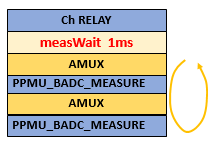

measWait()
Specifies the time to wait between the previous event and measuring the value.
Syntax
measWait(double dMeasWait);
| Parameter | Description |
|---|---|
| dMeasWait | The time to wait |
Note This command must work together with measurement commands, for example,
vMeas(), iMeas(), and vPulse().
Examples
Example 1
RDI_BEGIN();
rdi.dc().pin("pinA").vForce(2.5 V).iMeas().measWait(1 ms).execute();
RDI_END();Example 2
For BADC measurements via the PPMU using
valueMode(TA::BADC), the measWait() time is effective only
once before the measurement of all pins. The signal of all pins to measure can settle via the
PPMU-relay in parallel.
This behavior is different from the measWait() command used in BADC-HIZ
measurements via the DC-relay (see Board ADC examples below).
Below is an example, where pin "DATA36" is over 2 sites (for example, 10308 and 10310) which share the same BADC.
RDI_BEGIN();
rdi.dc().pin("DATA36").iForce(0).vMeas().valueMode(TA::BADC).measWait(1 ms).execute();
RDI_END();
Functional changes
- Introduced in SmartRDI 2.1.0